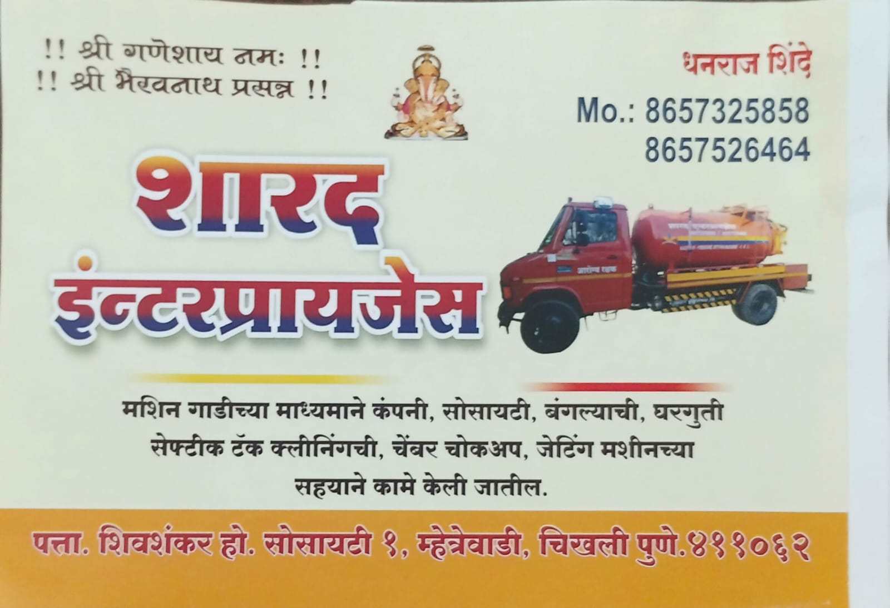

SEPTIC TANK CLEANING
Septic Tank Cleaning Services
Septic tank cleaning for homes, properties, and facilities in Pune and surrounding service areas.
Septic tank and drainage cleaning across Pune
SARAD Enterprises provides septic tank cleaning, drainage cleaning, main line cleaning, and sewage cleaning for homes, businesses, and industrial sites in Pune and nearby areas.
SARAD ENTERPRISES SERVICES
Explore our septic tank, drainage, main line, and sewage cleaning services in Pune, Chakan, Baner, Pimpri, Nigdi, Bhosari, and Hinjewadi.
SEPTIC TANK CLEANING
Septic tank cleaning for homes, properties, and facilities in Pune and surrounding service areas.
DRAINAGE CLEANING
Drainage cleaning support for residential, commercial, and industrial properties across the Pune area.
RESIDENTIAL SERVICE
Septic tank cleaning for homes and residential properties, with local service in Pune and nearby communities.
COMMERCIAL SERVICE
Septic tank cleaning for commercial buildings and business facilities in the Pune service area.
INDUSTRIAL SERVICE
Industrial septic tank cleaning for factories, worksites, and other facilities that need a service visit.
MAIN LINE SERVICE
Main line cleaning for properties in Pune, Chakan, and Baner. Contact SARAD Enterprises to discuss your service needs.
SEWAGE SERVICE
Sewage cleaning services for residential, commercial, and industrial customers around Pune.
LOCAL SERVICE COVERAGE
Contact SARAD Enterprises for septic tank, drainage, main line, and sewage cleaning in these Pune-area locations.
ABOUT SARAD ENTERPRISES
SARAD Enterprises provides septic tank, drainage, main line, and sewage cleaning for residential, commercial, and industrial customers in Pune and nearby areas.
Our professional team helps customers discuss their cleaning needs and arrange the right service for their property.
Talk to our teamWHY CHOOSE SARAD
A local team with experience across the cleaning services customers need.
Experience serving septic tank, drainage, main line, and sewage cleaning needs.
A professional team for residential, commercial, and industrial service requirements.
Discuss septic tank, drainage, main line, and sewage cleaning with one local service provider.
Service coverage includes Pune, Chakan, Baner, Pimpri, Nigdi, Bhosari, and Hinjewadi.
CUSTOMER REVIEWS
We value feedback from our customers. We’re preparing this space for genuine customer reviews and ratings—no sample or unverified reviews are shown.
SARAD ENTERPRISES IN ACTION
Photos and videos from SARAD Enterprises' septic tank and cleaning operations.
REAL SARAD FIELD WORK
Photos from SARAD Enterprises' own service work.



SERVICE VIDEOS
Play a clip to view the service work.
CUSTOMER INFORMATION
Contact SARAD Enterprises to discuss the right service for your home, business, or industrial site.
We provide residential, commercial, and industrial septic tank cleaning services in Pune and nearby areas including Chakan, Baner, Pimpri, Nigdi, Bhosari, and Hinjewadi.
Drainage cleaning services are available in Chakan, Baner, Pimpri, Nigdi, Bhosari, and Hinjewadi. Contact us to discuss your location and cleaning requirement.
Yes. Contact SARAD Enterprises about main line cleaning in Pune, Chakan, and Baner, or sewage cleaning in Pune, Pimpri, Nigdi, Bhosari, and Hinjewadi.